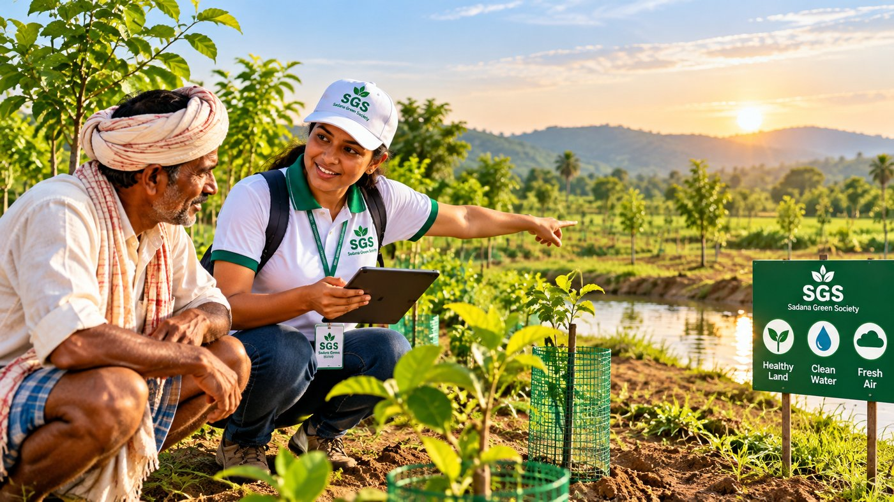

Home
Environment
Healthy land, water and air are the base of farming. Everything SGS does is built around protecting them.
Sadana Green Society · Field programmesProtecting land, water and air with farmers

How our work helps the environment
Six areas where farm-level action makes a real difference.
- Climate change mitigationTrees and soil store carbon, and practices like AWD reduce methane from paddy fields.Carbon credits
- Trees and biodiversityMixed plantations bring back tree cover, bird life and pollinators on working farmland.Agroforestry
- Soil healthLeaf litter, roots and nitrogen-fixing trees rebuild organic matter and reduce erosion.
- Water conservationShade, mulch and AWD reduce water use and help soil hold moisture.AWD
- Cooler microclimate and cleaner airTree cover lowers local heat and acts as a windbreak against dust and storms.
- Community awarenessWe explain climate action in plain, local terms so farmers and families can act on it.
What any farmer can do
Simple steps that help the environment and the farm at the same time.
- Plant trees on bunds, boundaries and unused corners
- Choose a mix of fruit, timber and soil-building trees
- Mulch the soil instead of leaving it bare
- Avoid burning crop residue and use it as compost or mulch
- Use AWD in paddy where irrigation can be controlled
- Protect existing trees and water sources
Climate action you can measure
Through carbon programmes, results from the field are recorded and verified so climate benefits are real and traceable.
Learn how credits work in carbon credits and their benefits and how AWD cuts methane.